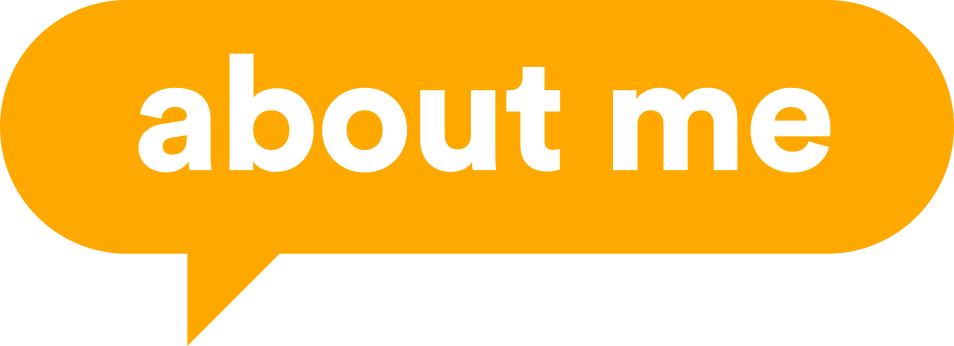

Hi, I have 15+ years experience working in advertising with a variety of skills such as: web design, html banner creation, 2D and 3D motion graphics for online videos, broadcast and social media.
I love to experiment with new animation techniques, discover new software and apply what I've learned to daily client work, or personal work wherever I can.